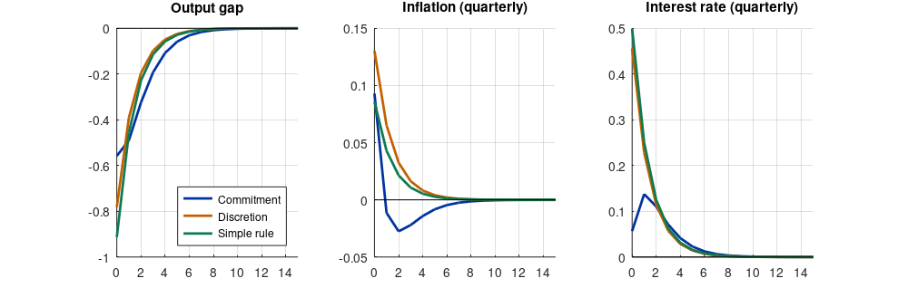

Step 1The question and the setup
How should a central bank respond to shocks, and how much does commitment matter? In the New Keynesian model, a second-order approximation to household welfare gives the central bank a quadratic loss in inflation and the output gap (Woodford 2003; Galí 2015):
The constraints are the IS curve and the Phillips curve of the NK guide, with a cost-push shock \(u_t\) and a natural-rate (demand) shock \(r^n_t\). Three policies are compared:
| Policy | Dynare command | Meaning |
|---|---|---|
| Commitment | ramsey_model |
The central bank chooses the whole future path of policy once and sticks to it |
| Discretion | discretionary_policy |
It re-optimises every period, taking future policy as given |
| Optimal simple rule | osr |
The best Taylor rule \(i_t = \phi_\pi \pi_t + \phi_x x_t\) |
Why the comparison matters
Commitment is the best the central bank can do, but it requires credibility: promises about future policy must be believed. Discretion is what happens without that credibility. A simple rule is what central banks can actually communicate. The gaps between the three losses measure the value of commitment and the cost of simplicity.
Step 2Write the model in Dynare
// Optimal policy in the New Keynesian model. Run with -DPOL=1 (commitment), 2 (discretion) or 3 (optimal simple rule).
@#ifndef POL
@#define POL = 1
@#endif
var x pi i u rn;
varexo e_u e_rn;
parameters beta sigma theta varphi eps kappa lambda_x phi_pi phi_x rho_u rho_rn;
beta = 0.99; sigma = 1; theta = 0.75; varphi = 1; eps = 6;
kappa = (1 - theta) * (1 - beta*theta) / theta * (sigma + varphi);
lambda_x = kappa / eps; // welfare weight on the output gap
phi_pi = 1.5; phi_x = 0.125; rho_u = 0.5; rho_rn = 0.8;
model(linear);
x = x(+1) - (1/sigma) * (i - pi(+1) - rn); // IS curve
pi = beta * pi(+1) + kappa * x + u; // Phillips curve
u = rho_u * u(-1) + e_u; // cost-push shock
rn = rho_rn * rn(-1) + e_rn; // natural-rate shock
@#if POL == 3
i = phi_pi * pi + phi_x * x; // simple rule, coefficients optimised below
@#endif
end;
shocks;
var e_u; stderr 0.2;
var e_rn; stderr 0.5;
end;
@#if POL == 1
planner_objective pi^2 + lambda_x * x^2;
ramsey_model(planner_discount = 0.99, instruments = (i));
stoch_simul(order = 1, irf = 16, nograph) x pi i;
@#elseif POL == 2
planner_objective pi^2 + lambda_x * x^2;
discretionary_policy(instruments = (i), irf = 16, planner_discount = 0.99, nograph) x pi i;
@#else
optim_weights; pi 1; x lambda_x; end;
osr_params phi_pi phi_x;
osr_params_bounds; phi_pi, 1.01, 10; phi_x, 0, 5; end;
osr(opt_algo = 9, irf = 16, nograph) x pi i;
@#endifdynare opt
MODEL SUMMARY Number of variables: 9 Number of stochastic shocks: 2 Number of state variables: 4 Number of jumpers: 4 Number of static variables: 1 MATRIX OF COVARIANCE OF EXOGENOUS SHOCKS Variables e_u e_rn e_u 0.040000 0.000000 e_rn 0.000000 0.250000
How to read it
- Under commitment and discretion there is no policy rule in the model block: the interest rate is the planner's instrument, and Dynare derives the optimality conditions itself. That is why the model has one equation fewer than variables.
planner_objectivestates the period loss;planner_discountits discount factor.- For the simple rule, the rule is in the model and
osrsearches over its coefficients to minimise the weighted sum of variances given inoptim_weights. The bounds keep \(\phi_\pi\) above 1 (determinacy) and within a range a central bank could announce. - The output above is the commitment solution: note how the cost-push shock of the previous period still affects today's choices, a sign of the history dependence of commitment.
Step 3Solve under the three policies
pols = {'Commitment', 'Discretion', 'Simple rule'};
P = struct();
for p = 1:3
clear functions;
evalc(sprintf('dynare opt noclearall nograph nolog -DPOL=%d', p));
lam = M_.params(strcmp(cellstr(M_.param_names), 'lambda_x'));
sd = sqrt(diag(oo_.var)); % moments of the listed variables: x, pi, i
P(p).sdx = sd(1); P(p).sdpi = sd(2); P(p).sdi = sd(3);
P(p).loss = P(p).sdpi^2 + lam * P(p).sdx^2;
P(p).irf_x = oo_.irfs.x_e_u; P(p).irf_pi = oo_.irfs.pi_e_u; P(p).irf_i = oo_.irfs.i_e_u;
if p == 3
P(p).coef = M_.params(strcmp(cellstr(M_.param_names), 'phi_pi')) * [1 0] + M_.params(strcmp(cellstr(M_.param_names), 'phi_x')) * [0 1];
end
end
fprintf('%-12s %8s %8s %8s %10s %12s\n', '', 'sd(x)', 'sd(pi)', 'sd(i)', 'loss', 'vs commitment');
for p = 1:3
fprintf('%-12s %8.3f %8.3f %8.3f %10.4f %11.1f%%\n', pols{p}, P(p).sdx, P(p).sdpi, P(p).sdi, P(p).loss, 100*(P(p).loss/P(1).loss - 1));
end
fprintf('\nOptimised simple rule: phi_pi = %.2f, phi_x = %.2f\n', P(3).coef);sd(x) sd(pi) sd(i) loss vs commitment Commitment 0.843 0.102 0.858 0.0306 0.0% Discretion 0.903 0.150 0.986 0.0459 50.0% Simple rule 1.059 0.130 1.052 0.0489 59.8% Optimised simple rule: phi_pi = 10.00, phi_x = 0.39
How to read it
- Commitment has the lowest loss by construction.
- Discretion is worse: the stabilisation bias. Without the ability to promise future restraint, the central bank must fight a cost-push shock entirely with today's output gap, while under commitment it spreads the adjustment over time by promising to keep policy tight after the shock fades.
- The optimised simple rule does worse than both. It hits the upper bound of \(\phi_\pi = 10\): optimal policy fully offsets demand shocks (the divine coincidence), and a rule can only approximate that by responding ever more strongly to inflation. Even so, a rule that reacts only to current inflation and the gap cannot reproduce the history dependence of commitment, the promise to stay tight after a cost-push shock has passed. Adding the lagged interest rate or the price level to the rule is the standard way to close much of this gap.
- Volatility of the interest rate is not in the loss here. Adding a term in \(i_t^2\) to the objective is the standard way to obtain smoother, more realistic optimal rules.
Step 4Responses to a cost-push shock
f = figure('position', [0 0 900 290]);
t = 0:15; vars = {'irf_x', 'irf_pi', 'irf_i'}; titles = {'Output gap', 'Inflation (quarterly)', 'Interest rate (quarterly)'};
for v = 1:3
subplot(1, 3, v); hold on;
for p = 1:3, plot(t, P(p).(vars{v})); end
plot([0 15], [0 0], 'k-', 'linewidth', 0.5); title(titles{v}); grid on; xlim([0 15]);
if v == 1, legend(pols, 'location', 'southeast'); end
end
print(f, '-dpng', '-r110', 'costpush.png');
fprintf('Cumulative change in the price level after 16 quarters: commitment %.3f, discretion %.3f\n', sum(P(1).irf_pi), sum(P(2).irf_pi));Cumulative change in the price level after 16 quarters: commitment 0.000, discretion 0.261

How to read it
Under discretion, the output gap and inflation simply follow the shock: once the shock is gone, policy has no reason to do anything. Under commitment, the output gap stays negative after the shock has faded and inflation turns slightly negative: the central bank promises to undo part of the price increase. Because firms expect this, they raise prices less today. The cumulative change in the price level is close to zero under commitment, which is why optimal commitment policy resembles price-level targeting.
Step 5Write the paper
How to write it: results
We compute optimal monetary policy under commitment and under discretion, and the Taylor rule that minimises the central bank's loss, in the calibrated New Keynesian model. Discretion raises the loss substantially relative to commitment, reflecting the stabilisation bias: under commitment, the central bank keeps policy tight after a cost-push shock has dissipated, which lowers inflation expectations and spreads the adjustment over time, so that the price level returns close to its initial path. A Taylor rule with optimised coefficients performs worse than discretion in this model, because a rule responding only to current inflation and the output gap cannot replicate the history dependence of optimal commitment policy.
Common mistakes
- Leaving the policy rule in the model when computing Ramsey or discretionary policy: the instrument must be free.
- Using an ad hoc loss function and calling the result “optimal”. Derive the weights from welfare, or state that the loss is a mandate.
- Optimising a simple rule without bounds: coefficients run off to extreme values that no central bank would announce.
- Comparing policies by one variable's volatility rather than by the loss.